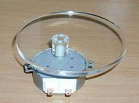
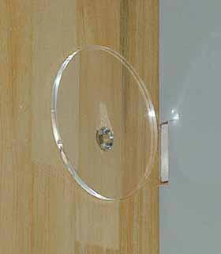

|
材料は、電子レンジ用の
超低速トルクモーター(3RPM)
90mmアクリル円盤と
ステー（業者に特注）
電灯用のリモコンユニット
(一応ワイヤレスで動かす。見栄っ張り!) |
|
 |
|
|  |
円盤の中心をずらしてステーと接着。 |
|
|
|  |
プロジェクター側から挿入。
隙間の余裕をみてグレーの
ベニヤを一部切り取った。 |
|
|
|
モーターをリモコンユニット経由で
取り付け、配線する。
手前はリモコンの受光部。
これは以前使っていて
不要になったものを加工しました。 |
|
|
|
プロジェクターをセットしたところ。
天板と補強ステーのすきまに
アクリル円盤が入り、
天板を支えるようになる。
天板は自重で常に円盤に接しているので、
円盤の回転によって、
30ミリ上下運動を繰り返します。
スクリーン上では、画面が30センチの
上下移動となって表れます。 |
|
|
＜使ってみた感想＞
画面を見ながらスイッチを入れるとゆっくりと上下するので、
希望の位置でぴたりと止めることが出来ました。上下サイクルはジャスト10秒です。
モーターは全くの無音なので、簡単な仕掛けですが結構いい感じですｖ（＾＾）v
|